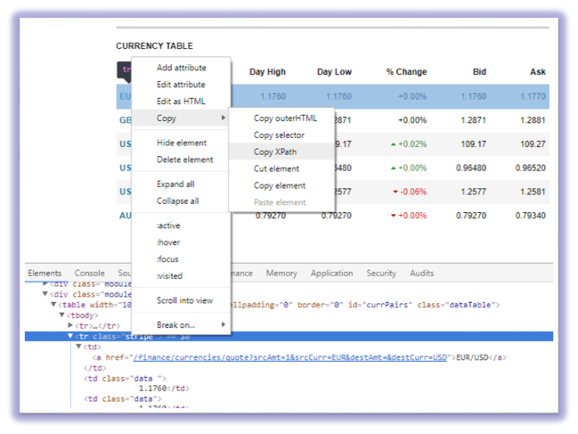
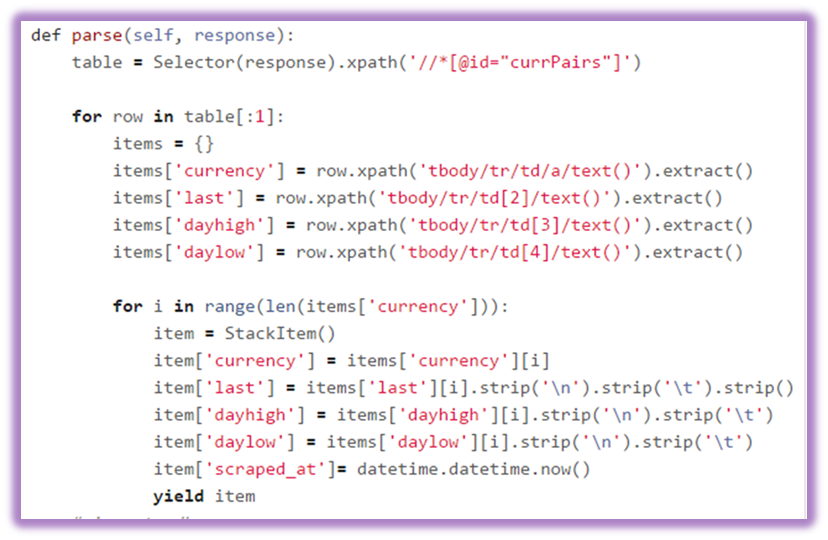
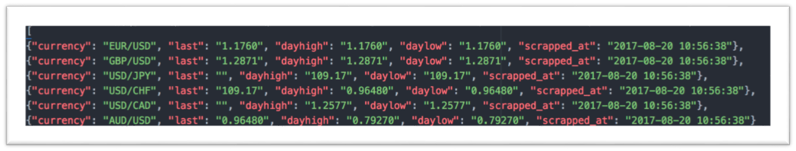
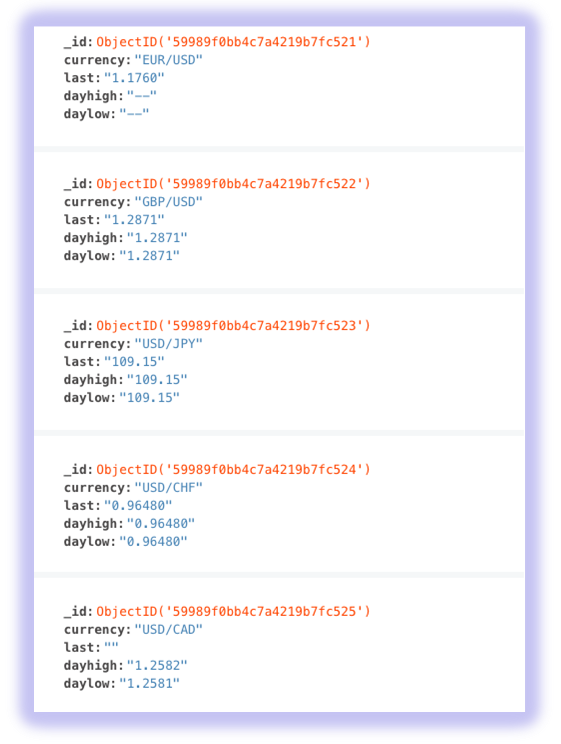

SpiderGals BLOG
Welcome to our CoderGals Hackathon blog

Scraping FX exchange rates from public websites
Storing the scapped data into MongoDB database, August, 19 2017
For this challenge we decided to use a framework from Python called Scrapy that grabs the FX exchange rates the currency, last time when were updated, the highest deal and the lowest. Scraped data should then be stored in MongoDB, for this procedure we will use PyMongo which is a package from python for connecting MongoDB with Python.
Installation
In order to scrap particular data we need the Scrapy library along with PyMongo for storing the data in MongoDB. If you’re running OSX or a flavor of Linux, install Scrapy with pip (with your virtualenv activated):
> $ pip install Scrapy
Once Scrapy is setup, install PyMongo with pip:
> $ pip install pymongo
Scrapy Project
Start a new Scrapy project by typing in command line, This creates a number of files and folders that includes a basic boilerplate for you to get started quickly:
> $ scrapy startproject name_of_project
Scrapy uses XPath selectors to extract data from a website. In other words, we can select certain parts of the HTML data based on a given XPath. As stated in Scrapy’s documentation, “XPath is a language for selecting nodes in XML documents, which can also be used with HTML.” Again, we basically tell Scrapy where to start looking for information based on a defined XPath. We navigate to the Reuters’ site in Chrome and find XPath selectors.
We select the table:
table = Selector(response).xpath('//*[@id="currPairs"]')
And then navigate through the table rows and table cells:
row.xpath('tbody/tr/td/a/text()')
We parse the data and then we plan to use to save all of our crawled data.
Open settings.py and specify the pipeline and add the database settings
ITEM_PIPELINES = {'stack.pipelines.MongoPipeline': 100 }
MONGODB_SERVER = "localhost"
MONGODB_PORT = 27017
MONGODB_DB = "scrapy"
MONGODB_COLLECTION = "currencies"
The saved json data then will be stored into MongoDB
To get up running the project you must run the command within the “stack” directory:
> $scrapy crawl stack
We run the command to make the requests and store the data in database every 60 seconds:
> $watch -n 60 scrapy crawl stack

Scrapy Tool
Scraping FX exchange rates from the Reuters website, August, 20 2017
Forex (FX) is the market in which currencies are traded. The data collected from the websites using scrapy could be used for different data analysis that are required by any person, business, firm or country for their financial needs. This data could be used for different visualizations using software applications that could be built specifically for this purpose.

SpiderGals
Our group was made of five girls who have a background in Computer Science.
Tags
#CoderGals #Hackathon #Prizren #code #solutions #hack #ideas #tech #innovation #challenge #weekend #team #event